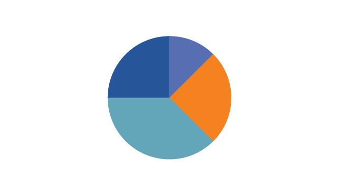

NCR Management Dashboard
Welcome, User

Quick Actions
Take immediate action on your NCRs by creating new reports or reviewing existing ones. These quick links provide direct access to the tools you need for effective NCR management.
NCR Statistics
Track the number of open, closed, and in-progress NCRs for better operational control.
25
Open NCRs
12
Closed This Week
Recent NCRs
Stay updated with the most recent NCRs in the system. These represent the latest quality issues or operational discrepancies that need to be monitored or addressed.
- NCR-2023-001: Product Defect - A critical defect discovered in the manufacturing line.
- NCR-2023-002: Process Deviation - Deviation from standard operating procedure during quality checks.
- NCR-2023-003: Documentation Error - Incorrect documentation affecting production workflow.
NCR by Department
Visualize the distribution of NCRs across different departments. This pie chart helps to identify where the majority of quality issues are occurring, enabling targeted improvements.
